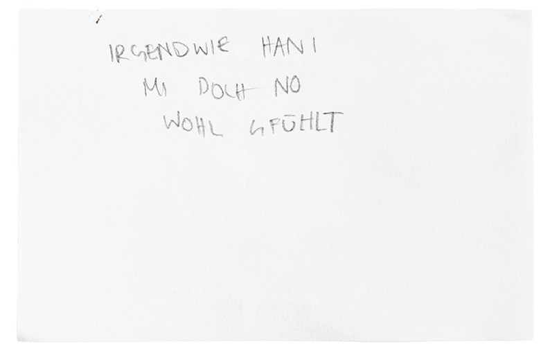
Was man im Haus wahrnimmt, wo das eigene Interesse hinfällt und was daraus wird, ist für alle verschieden. Für Anja waren es diese Skizzen, für mich diese Webseite.
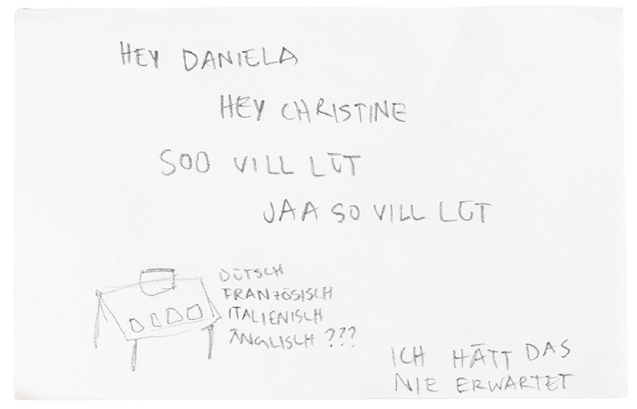
Die Besuchstage locken eine überraschende Menge an Leuten an. Trotz vergleichsweise wenig Publicity, ist ein öffentliches Interesse am Haus vorhanden.
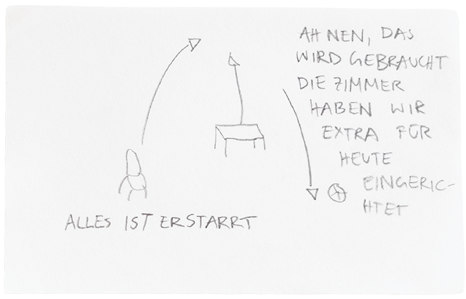
Nicht nur die Blumen von vorhin, sondern das ganze Mobiliar ist aktiv und versteinert zugleich.
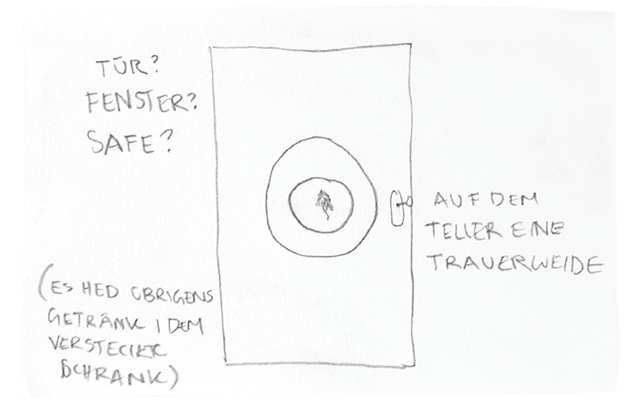
Der Online-3D-Rundgang offenbart nur einen Bruchteil davon, was vor Ort zu Entdecken und Hören gibt.
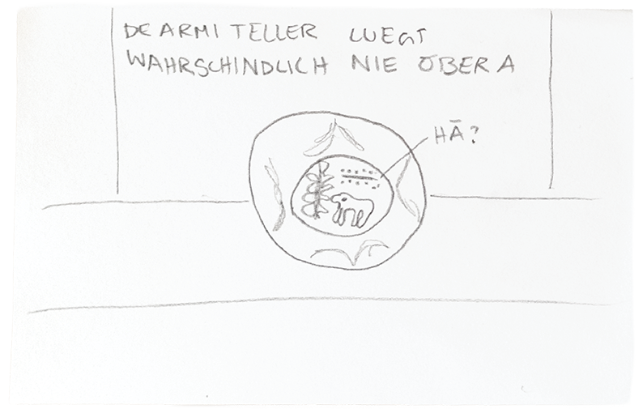
Dieser Teller ist ziemlich versteckt. Oder hättest Du ihn gesehen?
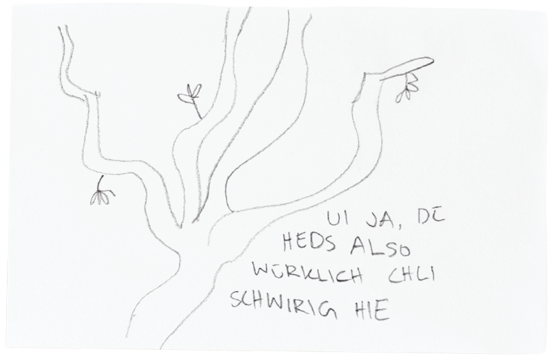
Jede kleine Reibung mit eigenen Erfahrungen kann aber in eine produktive Richtung kanalisiert werden, die genuine Fragen in Verbindung mit Bundeseigentum und Zugänglichkeit offenlegt.
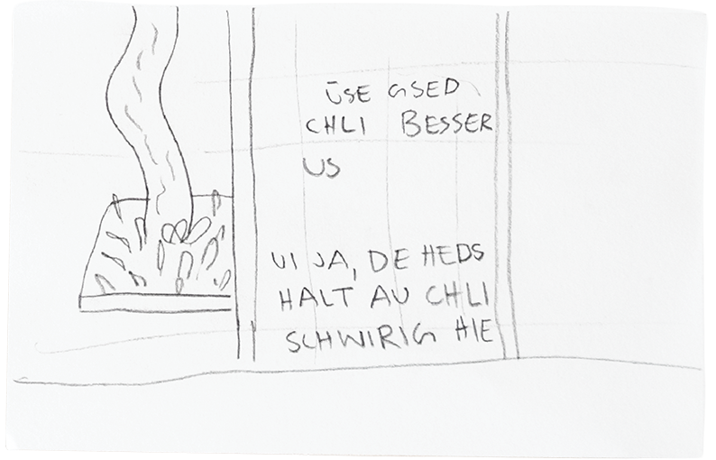
Warum muss sich der Baum im Innenhof abmühen? Warum ist der öffentliche Besitz nur viermal im Jahr für die Öffentlichkeit zugänglich? Das Befragen des Ortes kann ganz mundane Züge haben.
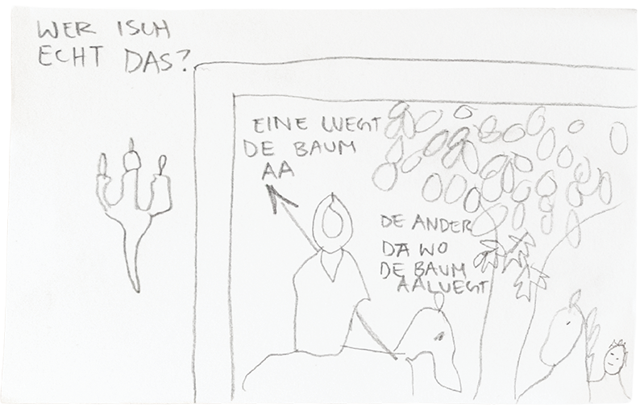
Wer blickt wen an? Das Interieur regt zur Reflexion über den Rezeptionsmoment an. Auch dann schauen Leute Bäume an – und andere Leute die Leute, die Bäume anschauen.
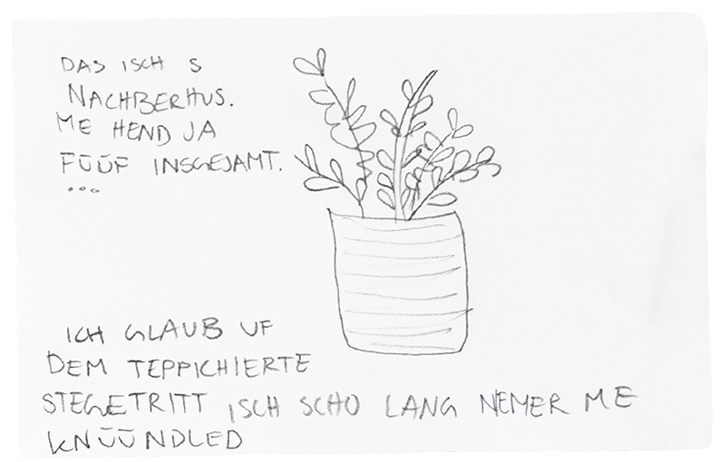
Während des Besuches zu Zeichnen bringt eine spezifische körperliche Präsenz mit sich. Das fällt vor Ort auf. Sich selbst, den anderen Besuchenden und den Mitarbeitenden.
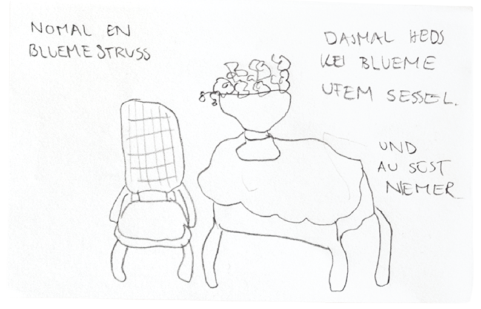
Die Schnittblumen sind, wie vieles im Haus, zwischen tot und lebendig anzusiedeln. Im Moment des Besuches tragen sie zur Raumwirkung bei, sind aber bereits von den Wurzeln getrennt und werden zu jedem Anlass ersetzt.
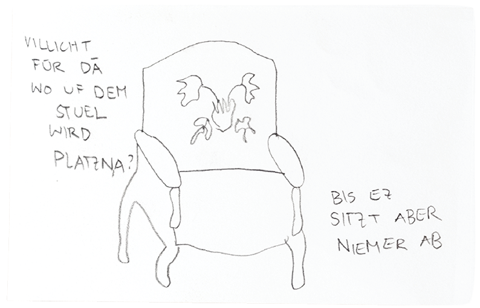
Auch wenn das Haus kein Museum ist, wird das Mobiliar nicht in der gleichen Funktion wahrgenommen, wie in anderen Häusern. Auf die Sessel setzt sich niemand, sie sind ein Exponat.
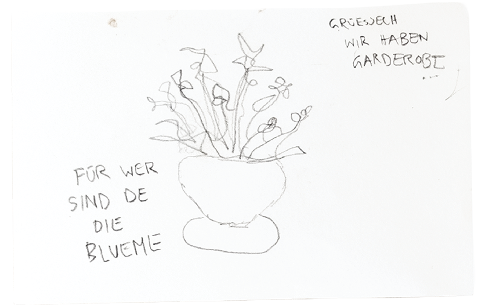
Die hier gezeigten Skizzen von Anja Roosens dokumentieren ihr Erlebnis an der Erkundungstour im Beatrice von Wattenwyl-Haus im April 2026.